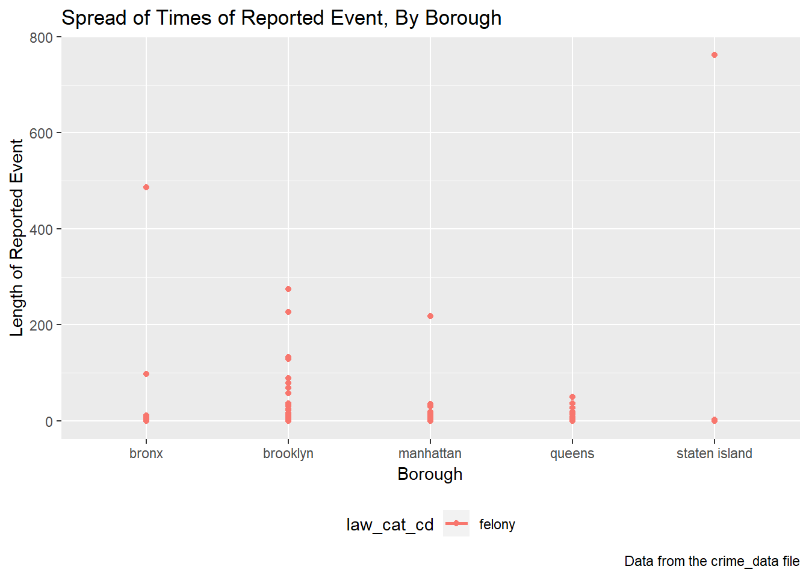

As one of our exploratory analyses, we thought it would be interesting to examine whether the length of time of the reported event or crime differs by borough. Examining the length of the reported event or crime can serve as a proxy inicatory of the severity of the crime by each borough, assuming that longer crimes tend to be more severe and less resolved.
First, we load the required R packages. Next, we read in the CSV file and tidy it up. For this exploratory analysis, we chose to limit the data by randomly sampling 1,000 observations from the data frame.
## cmplnt_fr_dt cmplnt_to_dt law_cat_cd time_diff time_diff2 boro_nm
## 1 2014-10-21 2014-10-21 felony 0 secs 0 manhattan
## 2 2016-05-02 2016-05-02 felony 0 secs 0 brooklyn
## 3 2016-10-09 2016-10-09 felony 0 secs 0 bronx
## 4 2017-12-27 2017-12-27 felony 0 secs 0 bronx
## 5 2016-08-02 2016-08-02 felony 0 secs 0 bronx
## 6 2015-01-06 2015-01-06 felony 0 secs 0 queens
We can look at the data in a table to examine general trends and get a feel of my data.
## [1] "cmplnt_fr_dt cmplnt_to_dt law_cat_cd time_diff time_diff2 boro_nm "
## [2] "------------- ------------- ----------- -------------- ----------- --------------"
## [3] "2014-10-21 2014-10-21 felony 0 secs 0.00 manhattan "
## [4] "2016-05-02 2016-05-02 felony 0 secs 0.00 brooklyn "
## [5] "2016-10-09 2016-10-09 felony 0 secs 0.00 bronx "
## [6] "2017-12-27 2017-12-27 felony 0 secs 0.00 bronx "
## [7] "2016-08-02 2016-08-02 felony 0 secs 0.00 bronx "
## [8] "2015-01-06 2015-01-06 felony 0 secs 0.00 queens "
## [9] "2014-10-15 2014-10-15 felony 0 secs 0.00 brooklyn "
## [10] "2017-06-08 2017-06-08 felony 0 secs 0.00 brooklyn "
## [11] "2015-08-14 2015-08-14 felony 0 secs 0.00 brooklyn "
## [12] "2014-08-16 2014-08-16 felony 0 secs 0.00 queens "
We can also look at whether the length of time for the reported event/crime differs by borough visually. 
From the graph above, we can see a couple of things. First, there are, numerically speaking, fewer reported events in Staten Island. Secondly, the spread of the reported events seems to be slightly larger in the Bronx than in other boroughs. Lastly, although the spread among Brooklyn, Manhattan, and Queens is approximately the same, Queens has more outliers.
You can find the code for this exploratory analysis here.
For our second exploratory analysis, we chose to examine offense rates by borough. Doing so gives us an understanding as to what NYPD can prioritize their efforts to when stemming crime.
First, we load the required R packages and read in the dataset. We also load information from the U.S. Census on total population in the individual NYC boroughs to calculate offense rates in each borough.
We created a data frame containing our final data.
## # A tibble: 1 x 1
## n
## <int>
## 1 221Lastly, we visually look at the individual offenses by borough over the four years.
From this exploratory subanalysis, we can see that the rates of individual offenses are highest in the boroughs of Bronx and Brooklyn, followed by Manhattan and Queens. Staten Island reported the lowest rates of individual offenses throughout the four years. Individual offense rates increased in the Bronx from 2014 through 2017. On the contrary, Brooklyn witnessed a significant plummeting in offense rates through the years 2014 to 2017.
Include Yaa’s
Include Amin’s